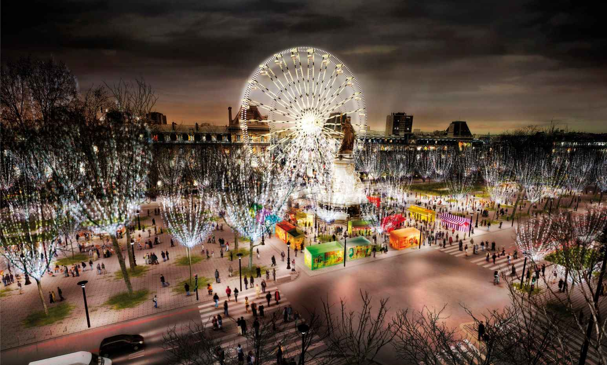

Survolez l'image et agrandissez/réduisez la vue à l'aide de la molette.
Budget: 10 034 000 € HT
Surface: 36 888 m²
Date début: 2009
Date fin: Non retenu
Maîtrise d'ouvrage: Ville de Paris
Co-traitant(s): bureau des paysages
Description:
Au cœur de Paris, la République est une des plus grandes places européennes. Dominée par un monument
de la fin du XIXe siècle, la place est devenue un pôle d’échange métropolitain, lieu de passage entre le centre et le faubourg. Ce n’est pas seulement une surface, mais à l’image d’un arbre plongeant
ses racines dans le sol, c’est une épaisseur, une coupe dont l’amplitude est comprise entre le niveau
des toits des immeubles et celui des couloirs de cinq lignes de métro. Le principal défaut de la place
est d’être colonisé par la voiture, alors que sa capacité de transformation au gré des évènements représente un atout. Le projet d’aménagement entend mettre en scène la juxtaposition de ce qui existe
et ce qui est nouveau.
Le réemploi concerne autant les arbres, les candélabres que les bordures
de trottoir, les fondations ou le nivellement. L’économie ainsi réalisée sur le budget alloué permet
d’équiper la place en préaux qui rendent plus confortable le passage entre le sous-sol
et la surface, abritent des terrasses, invitent à une rencontre conviviale.
Pour que la République devienne une grande place métropolitaine, un nouveau partage de l’espace public
est proposé entre les emprises réservées aux piétons et aux modes doux et celles dévolues
à la circulation automobile.
Espace témoin de la maîtrise environnementale (diversité
des essences végétales, sols perméables, entretien à l’eau claire, éclairage plus proche du sol,
mise en œuvre d’enrobés poreux phoniques sur les chaussées…),
la place change de visage au fil des saisons.
{kind=link}
{kind=link}
{kind=link}
{kind=link}